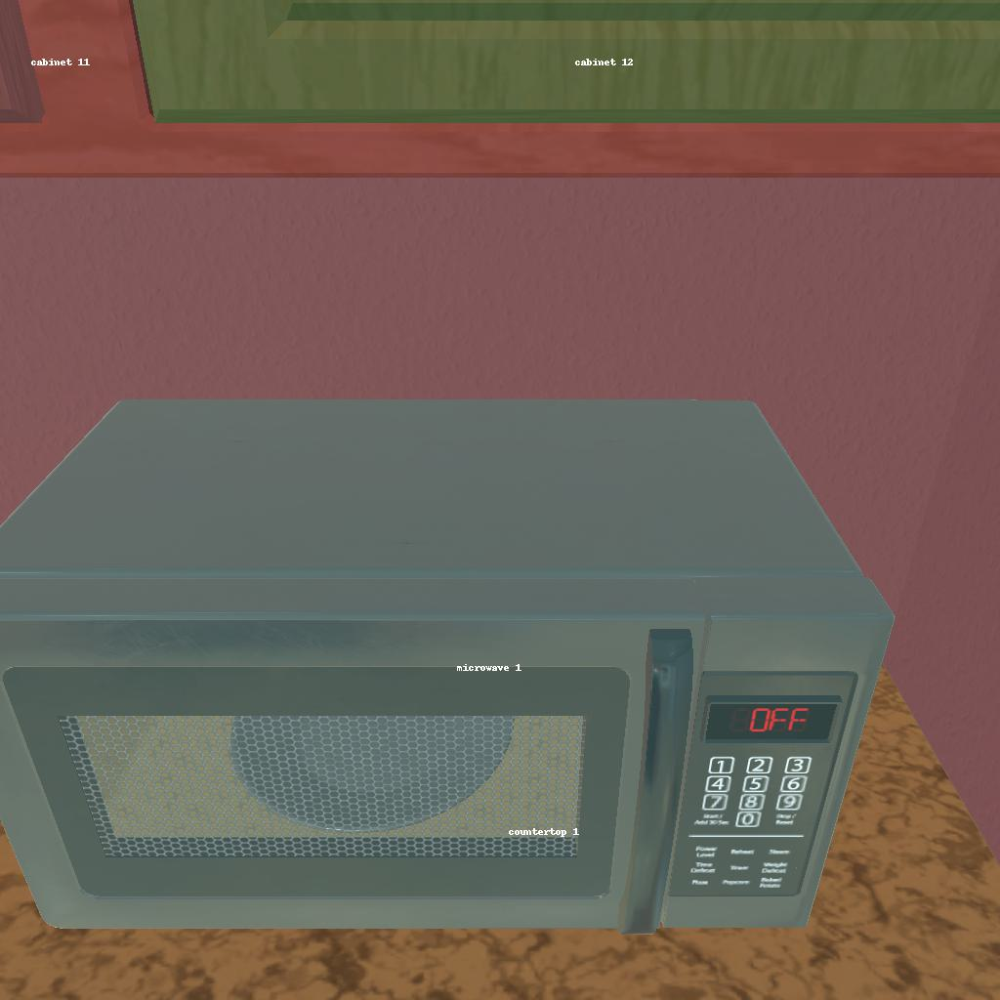

---------------------------------------------------------task: 23---------------------------------------------------------
--------------------------------------------------------------------------------------------------------------------------------------------------------------------
--------------------------------------------------------------------------------------------------------------------------------------------------------------------
Step:--------------------------------------------------------------------------10-------------------------------------------------------------------------------
----------------------------------------
VLM Prompt:
Image1:
**Instruction**
1. Analyze the provided image to identify all visible household objects, focusing on those relevant to the task description "put a hot mug in coffeemachine."
2. Use the analysis of the image and the task hint "The agent must find an object of the desired type, pick it up, go to a microwave, heat the object with the microwave, then find the correct location to place it, and put it down there. The agent does not need to use the microwave button or open the microwave to heat the object, and the agent just needs to do action that is "heat the object with the microwave"." to answer the question: what is the most reasonable action in the choices for the task description "put a hot mug in coffeemachine"?
4. Decide and write the answer using the template: The answer is: (i): , where i is the real number. If there is no desired object in the image, search every place based on **Initial Observation** to find the object. And if no one is exactly correct, choose a similar answer.
**Initial Observation**
You are in the middle of a room. Looking quickly around you, you can see cabinet (1-15), fridge (1), countertop (1-4), drawer (1-4), microwave (1), toaster (1), coffeemachine (1), garbagecan (1), sink (1), stoveburner (1-3), sinkbasin (1)
**Answer Choices**
(1): go to cabinet 1
(2): go to cabinet 2
(3): go to fridge 1
(4): go to countertop 1
(5): go to cabinet 4
(6): go to cabinet 5
(7): go to cabinet 6
(8): go to cabinet 7
(9): go to drawer 1
(10): go to drawer 2
(11): go to cabinet 8
(12): go to drawer 3
(13): go to cabinet 9
(14): go to cabinet 10
(15): go to drawer 4
(16): go to cabinet 11
(17): go to toaster 1
(18): go to cabinet 12
(19): go to cabinet 13
(20): go to cabinet 14
(21): go to cabinet 15
(22): go to countertop 2
(23): go to coffeemachine 1
(24): go to garbagecan 1
(25): go to countertop 3
(26): go to countertop 4
(27): go to sink 1
(28): go to stoveburner 1
(29): go to stoveburner 2
(30): go to stoveburner 3
(31): go to sinkbasin 1
(32): open microwave 1
(33): close microwave 1
(34): examine microwave 1
**Answer**
Let's think step by step by following the instructions.
----------------------------------------
----------------------------------------
Original Response:
The task description is to "put a hot mug in coffeemachine," which means we need to first find a mug, heat it, and then place it in the coffeemachine. The hint tells us that we need to use a microwave to heat the object but do not need to interact with the microwave buttons or door.
Analyzing the provided image, we see a microwave (microwave 1) on the countertop (countertop 1). There is no mug visible in the image, so we must search for one based on the Initial Observation.
Since we are looking for a mug, which is typically found in cabinets or on countertops, we can eliminate some choices that are not likely to have a mug, such as the fridge, toaster, garbage can, sink, stove burners, and sink basin.
Among the remaining choices, going to a cabinet or a countertop makes the most sense to find a mug. Since countertop 1 is already visible and does not have a mug, we can look at the other countertops.
Considering the task and the analysis, the most reasonable action would be to search the cabinets or countertops where a mug is most likely to be found. Since we cannot see any mugs on the countertops in the image, we will choose to search the cabinets.
The answer is: (1): go to cabinet 1.
----------------------------------------
----------------------------------------
>>> Refine Original VLM Response and Get Pure Action: go to cabinet 1
----------------------------------------
-----------------------------------------------------------------
Running time: 12.173491954803467 seconds
Total Money: 8.273530000000006
-----------------------------------------------------------------
-----------------------------------------------------------------
Text Observation:You arrive at loc 0. The cabinet 1 is open. On the cabinet 1, you see a plate 2.
-----------------------------------------------------------------
UNSUCCEED